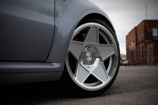
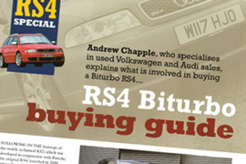
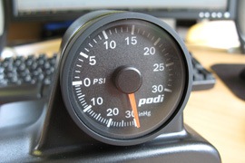

Latest News (newest first)
Dyno Run @ PowerStation
23/11/12
Just happened to drop into PowerStation today to grab something from Dirk and there was an OverclockersUK Dyno Day event being held there... seemed rude not to sling the RS on the dyno to see if things still happy after the last few outings at Santa Pod and Oulton Park.
Turns out much as expected, the car is going perfeclty and give a peak of 531 bhp (vs. 537 in June) though torque was down to 479 lb/ft (vs. 515 in June) but that's pretty much to do with the boost being much lower. Peak today was arond 1.7 bar with it holding at 1.5 for most of the run and rising to 1.6/1.7 just when all the timing then got pulled and the torque drops. In June the boost bas the same shape line but just 0.2 bar higher all along, so holding 1.7 bar and rising to 1.8/1.9 bar - view gallery
Trackday @ Oulton Park
14/11/12
With the car going so well I decided to embark on some more trackdays and having never been to Oulton Park before it seemed like a good time to visit when Apex Trackdays were offing an Open Pit for just £139 which was too good to pass up.
Firstly I have to say that track is HARD to get used to for the first time - at 2.69 miles a lap and with lots of undulations there's a lot to take in and remember. Took a few sessions to even get close to enjoying it, it's been a good while since I've been to a "new" track as it were. But, come the third session I was beginning to find my stride and start enjoying it. It really is a stunning track and one that I would certainly go back to - view gallery
Plastidip Coating Trim
11/11/12
Following the success of Plastidip Coating the Sportec Wheels I moved onto the next plan which is coating several items of trim to complete the "de-chromed" look (OK, it's mostly brushed aluminium but same effect!). Started off on the rear badges, and I can confirm this stuff really does just pull off as easily as everyone says! Then moved onto the grille and here I decided to coat the entire RS4 badge for now, but could peel off the coating from the red square if I fancy... same on the rear, have left it all black but could remove the red square. Then it was onto the mirrors and exhaust. Just a case of masking up the mirrors and with the exhaust it was given a good clean and degrease. There's difference of opinion if Plastidip is OK for exhaust tips but if not it will just break down and would be easy enough to remove. Figures it best to do the tips as with no CAT's they turbo mostly black soon after they are cleaned anyhow - view gallery
Plastidip Coating Sportec Wheels
04/11/12
When I bought the Sportec wheels they were quite cheap as the refurb job on them was shocking! I never really planned to keep them in that condition and indeed after a week’s use the fronts were badly marked from the DS2500 brake dust, as you can see from the pics below. Yes, those have been cleaned very well and that's staining that's been left! A while back I started to hear about this stuff called Plastidip which has been around for some time now but only in the past few years have people started to use it on vehicle parts. Whilst the colour range of the spray cans are a bit limiting I thought I'd just give it a go with the straight black and see how it went. The idea of this stuff is that it's pretty simple to remove, you just peel it off... well time will tell about that but there are plenty of YouTube videos about Plastidip so go take a look - view gallery
Santa Pod RWYB
28/10/12
There were a few folk chatting on AudiSRS.com about going along to the final RWYB (Run What You Brung) event at Santa Pod and I decided to pop along and see what the old girl could do! Being October it's a bit risky with the weather and Sunday didn't disappoint, it was cooooold (good for engines) and a little damp (not good for traction). It had rained heavily overnight so the first hour was spent drying the track off but allowed us to get signed in and in the queue, number 2 as it happens which was nice but also meant I'd be first down the strip! - view gallery
Audi Driver International 2012
13/10/12Had a great day out at Castle Combe again for the Audi Driver International show put on by Autometrix. It's the second time I've been and it was thankfully busier than ADI 2011. Decided not to take the car on track and instead enjoyed looking about what was on show and having a wonder around the track taking pictures. Surprised to say that there were about the same number of Red Flags (track closures) as there were on the Forge Action Day where there were 50+ cars on the track each session! - view gallery
Fitting 3SDM 0.05 Wheels
29/09/12 With Forge Motorsport being one of the 3SDM Wheel dealers it was rude not to try out the stunning new 0.05 wheels they now offer. They are a bit of a "marmite" wheel, some people loving them and some hating them and at first I was on the fence about them... having now got them on the car though, I love them!! Went with the 9.5" x 18" as they aren't available in 19" yet and had to have the ET40 - not ideal as I only had 16mm spacers available so in the pictures below they are 4mm further IN than standard wheels (though are 1" wider then OEM size). Also decided to go for a little bit of stretch on the tyres so went for some Falken 452 225/40/18 which I think are OK. Car was also dropped another 10/15mm though ideally it needs to be an Air now to get the look just right... as for whether I'll do that, not sure but never say never!! - view gallery
VMax Afterburner
15/09/12
As soon as my car was mapped by Rick @ Unicorn I knew I wanted to do one of these top speed events so jumped at the chance for the Afterburner event held today. Rick was kind enough to travel down for the day as it's not often you can check/adjust a map at WOT in 6th! Our first few runs out we took it easy to just get used to the sensation of driving so fast on a runway (it's quite surreal!) and getting used to breaking in what felt like no where near enough space! Rick was alos just checking the settings in the high boost map to ensure everything was running perfect, and it was all spot on. He didn't need to adjust anything that was 'bad' as it were. EGT temps were good as was timing - view gallery
Forge Action Day @ Castle Combe
08/09/12
This summers Castle Combe Action Day was sponsored by the great guys @ Forge Motorsport so it would be rude not to go and check the day out. Weather was stunning and very hot indeed, which made for a very very busy day... to say it was busy was an understatement, it took 40 minutes just to get in the gate!! - view gallery
Trackday @ Donington Park
18/08/12Have had the RS4 out on track for a handful of sessions over the past year I felt it was ready to do a full trackday. The plan had been to do a cheapy little airfield day (Abingdon) with a mate and his Type-R powered Lotus Elise, however that got sold out before we managed to book so we looked for an alternative on the same day. Using the handy website www.trackdays.co.uk we decided on an openpit event at Donington Park which is one of my favourite tracks, up there with Cadwell, and the day didn't disappoint. The weather was a mix of rain dry spells, thankfully enough for the track to dry out for a few sessions. Car performed flawlessly though I did get black flagged 3 laps into my first outing due to noise (0.4 dB over the 98.0 dB limit!) so that put an end of flat shifting and to be on the safe side I shifted around 6k rather than 7k - view gallery
Fitting Sportec Wheels
16/08/12
These set of Sportec wheels popped up for sale on www.audisrs.com and I couldn't resist them. They are the 18 x 8.5 fitment and come with some natty spacers that bolt up inside giving the option of ET35 or ET15. For the B5 RS4 the OEM fitment it ET20 so going to ET15 doesn't present any issues (ET35 would suit the S4 and various other cars). They also came with a set of Goodyear F1 Asymmetrics in the OEM size of 255/35/18 which was a huge bonus really. The wheels had just been refurbished, but they had done a very poor job (hence the bargain they were!) so they look rubbish up close at present but a refurb and/or colour change are on the cards. I did wonder if they would be a little lighter than the OEM wheels but I weighed both (see pics below) and they both came out exactly the same with a tyre fitted so certainly zero weight saving in these wheels! - view gallery
Headlight Intake
15/08/12
On my old 205 Mi16 track car I'd made a neat air filter out of an old headlight which was feeding a set of Jenveys. I'd never really given it much thought for the RS4 until I started to get into the idea of more outings on track, so I decided to make a direct cold air intake from an old headlight to feed the K&N Filter. So I picked up a used headlight, an air intake from Merlin Motorsport and some 83mm ducting from SiliconHoses.com then set about cutting things up! - view gallery
Fitting LOBA Front Brake Discs
14/08/12
One of the areas I felt was lacking with the RS4, and clearly not up to scratch, were the brakes. I'd fitted a full set of B7 RS4 front & rear brakes with EBC Yellow Stuff pads almost a year ago now and whilst they were a superb improvement ove the OEM B5 RS4 brakes they just didn't feel 'that' good. This was really highlighted by a few track outings this year where after the first one I ditched the EBC's and went for some Ferodo DS2500 which are pricey but a big improvement over the EBC's. Then the last outing at Combe (which was the first with the DS2500's) the brakes felt better but still didn't feel amazing and wondering around the pits seeing many other VAG based cars with the same 8-pot caliper fitted I figured they can't be THAT bad! Then I got chatting with the UK rep for LOBA Motorsport, a Germany based company, who had just finished off producing uprated discs for the B7 RS4 so I decided to give them a go - view gallery
Autometrix VAG Trackday @ Combe
14/07/12Since finishing off Phase 1 on the RS4 it seemed a great time to see how it felt out on track. With Castle Combe as my "local" track it seemed perfect timing that Autometrix (publishers of Audi Driver and VW Driver) were organising a VAG Trackday. One quick phone call and a few sessions were booked! Weather this summer (if you can call it that!) has been shocking and sadly Combe was no no different. Rain was falling all morning ranging from steady to heavy until around 1pm so my first 2 sessions were in heavy rain but the 3rd session was just a wet track so really started to get a feel for the new power (ran the non-meth map but with the meth on for extra cooling) and start to gain confidence in the rather heavy beast - view gallery
Fitting Phaeton Brake Ducts
06/07/12
This is a simple and cheap modification for the B5 RS4 and one that makes sense if you enjoy spirited driving or track work. It's a really simple mod as well, with only minimal modifications needed to the new parts and other than that it's a straight fit. - view gallery
Dyno Day @ PowerStation
09/06/2012
Seeing as it had been a while since the last organised Dyno Day I set about organising one at PowerStation for the guys on the AudiSRS.com and S2 forums. Initial response was great but as can happen people dropped out along the line with car issues or other commitments so the day ended up fairly small but was still great fun. There were 9 runners in the end and the day didn't start too well when the first two cars (both B5 RS4's) produced considerably lower than expected figures with estimates at around 460bhp and readings of 400bhp. Seems it may have just highlighted either "generous" previous dyno results or a few things that need to be checked out on the cars concerned. - view gallery
Wagner Sidemount Intercoolers Install
02/05/2012
Having originally looked at the possibility of fabricating my own sidemount intercoolers with the help of a few contacts, things just weren't happening and I was considering how to go about fabricating some ducts to match up to the bumper to ensure the cores get the maximum level of air to through them. So I gave up on that and looked elsewhere. My options as I saw it were a Front Mounted Intercooler, which although appears cheap at first glance does require a large amount of work as on the B5 RS4 the oil cooler and PAS cooler need to be moved which means new ones and more expense. The other option open to me was going down the tried and tested route of the Wagner Sidemount Intercoolers which are a pretty much straight fit into the OEM position and come with very tasty carbon composite ducts. A quick call to Mark @ Wagner Tuning UK and the next day a kit was on its way to me from Germany - view gallery
Devils Own Water/Meth Injection
02/05/2012
I'd never considered Water/Meth injection before buying the B5 RS4 and joining the AudiSRS.com. There are many S4/RS4 owners who have fitted Water/Meth injection with some great results, and the outlay isn't vast so I figured I'd give it a go to help achieve my target on Phase 1 of mods. The kit I went for is the DevilsOwn DVC-30 Progressive Kit with Dual Nozzle upgrade. This kit comes with their superb progressive controller which allows you to fine tune when the injection starts to happen and when you want it fully on, hence "progressive". Their more basic option is a basic "on/off" solenoid valve where you just pick one boost level for the system to activate - view gallery
Fitting Larger Inlet Trumpet
26/05/2012When I first put together the K&N Induction Kit from a few bits I had hanging about I always new the aluminium trumpet was too small as it went from 70mm UP to the 89mm of the MAF. Not an ideal situation as there is technically a bottle neck with going from smaller to larger. The solution was a 100mm aluminium trumpet sold by Graham Goode which is a straight fit for the filter and just needed a 102mm to 89mm reducer from SiliconHoses.com to finish it off. Space is getting a little tight in there now so I re-fitted the trimmed 45deg hose to the Y-Pipe which gave a bit more space. The bigger trumpet was also longer so about 40mm was removed to ensure it would fit neatly - view gallery
Fitting Bosch EV14 750cc Injectors
24/05/2012
With mapping on the horizon the final piece in the jigsaw puzzle is having the Bosch EV14 750cc Injectors fitted, so a quick visit to e-Parts once again and in a couple of hours the injectors were fitted. These injectors are indeed a perfect fit for the B5 RS4 and I can highly recommend them. If you would like to know where I got hold of them please contact me directly - view gallery
Fitting Bosch 044 Fuel Pump
10/11/2011
After only having the RS4 for a few weeks I pulled up to work one morning and all was fine, jumped into the car at lunchtime and it wouldn't fire. After taking the original fuel pump out we tested it on the bench, would you believe it the thing seemed to work! We checked all the wiring from the fuse board to the pump and that seemed fine. We figured it must be some kind of dodgy pump regardless and changing it was the best course of action. Checking out the price of a new OEM pump we figured it was almost the same price to get a Bosch 044 pump (rated higher than the OEM pump) and the necessary basket/filter best suited to fit that pump. - view gallery
Audi Driver International 2011
08/10/2011
Had a great day out at Castle Combe again for the Audi Driver International show put on by Autometrix. It's the first time I've been and have to say it was rather quiet, speaking to a few veterans they commented that it was by far the quietest the show had been for many years. Last time I took the car on track I was disappointed in how it handled so earlier this week I wound the AST's to the hardest setting and adjusted the Neuspeed ARB to it's stiffest setting... THAT DID THE TRICK!! Car felt a million times better, really went round the corners well, transformation was like night and day really. Car went like a dream too, even un-mapped it just pulls like a train to the red line so goodness knows what it will be like mapped! - view gallery
Speaker Upgrade
01/10/2011
The B5 RS4 comes with a BOSE speaker system as standard with an array of optional head units, however most of these components are starting to get tired and failing after 10+ years so it's only a matter of time before the need to replace the speakers becomes an issue. My drivers side door speaker had been crackling on and off pretty much since I got the car, sometimes I just wouldn't bother turning the stereo on at all but ultimately it needed replacing so I figured I'd replace the lot - view gallery
Audi Driver International - Stand Pass
26/09/2011With Audi Driver International (ADI) less than 2 weeks away my AudiSRS stand pass arrived this morning, better start cleaning the car!
I'll also be doing an AudiSRS dedicated track session, be rude not too. I was hoping to have the first phase of mods completed and the car mapped in time for ADI but it's unlikely to happen as I've still got to sort the intercooler out (and I'm still torn between side mount and front mount!).
Bosch EV14 750cc Injectors
25/09/2011In order to keep the fuelling nice and safe with the power targets I'm aiming for it's necessary to fit some larger injectors. Whilst I've heard some good things about Seimens 630cc injectors it does seem the default option for fitting "bigger injectors" to the B5 RS4 is to go with the Bosch EV14 with a 750cc rating. Handily one of my contacts knows where to get them from and sorted me out with a set. They don't look like much, in fact they are really small compared to most injectors (the B5 RS4 taking a compact fitment) so in another way I'm glad I got them for a cracking price rather then what most resellers charge! - view gallery
Dyno Run @ PowerStation
23/09/2011With the Milltek System and 3" Downpipes now fitted it was time to visit PowerStation and see what difference it's made to the power. Turns out quite a lot which isn't really that much of a surprise! It's worth noting that the car is still running the standard map, all that's changed is the exhaust and filter that would make any difference. Figures this time where much more what I expected with a result of 396bhp and 342ft/lb which is a huge increase on the figure from only 2 months ago - view gallery
Milltek Exhaust System & 3" Downpipes - Fitting
20/09/2011
Having sorted a full Milltek Exhaust System & 3" Downpipes it was over to the chaps at e-parts to get the system fitted. I don't envy them, it's a tough job doing the downpipes at the best of times! I stuck around of a bit but left them too it, will be collecting tomorrow and can't wait - view gallery
Forge 8-Pot Brakes - Trial Fit
20/09/2011The boys at e-parts have been giving me a hand again, this time with a trial fit of the brakes so I can see how far off things are. As expected they don't actually fit, but it looks like I just need to sort some new bells as the discs are the same size as the OEM discs and the calipers fit the hubs perfectly - view gallery
PODI Boost Gauge - Installed
18/09/2011
Finally got around to fitting the gauge, far easier then I expected though fiddly in parts. I went for the steering column mounting location as I think it's the neatest option, however it'll take some getting used to as it very "in your face" but I've got my eye on a device that can utilise the DIS display in the dash for monitoring boost along with other values available via VAGCOM - view gallery
Scorpion Exhaust - Update
16/09/2011With the fitment of a Milltek System shortly I thought I'd take another video of the Scorpion system now it's been used for a couple of months. I think it sounds a little quieter, that or I'm just getting used to it! - view movie
Milltek 3" Downpipes & Exhaust System
14/09/2011
The long term plan has always been to fit a set of 3" Downpipes without CATS along with an associated system and the opportunity arose to obtain a full Milltek System which was too good to pass up. Brand new and never fitted I can't wait to get them on the car! - view gallery
Forge 8-Pot Brakes
12/09/2011The standard brakes on the B5 RS4 were never going to set the world alight, in fact they are barely enough to help stop a car with just power that weighs so much! A common upgrade is to fit B7 RS4 front (and often rear) brakes as they are a superb option and look very OEM. Whist this is still an option I've been passed a set of Forge Motorsport 8-Pot Brakes which were fitted to a VW Scirocco that I'm going to see if I can make fit. - view gallery
Forge Action Day @ Castle Combe
10/09/2011
This summers Castle Combe Action Day was sponsored by the great guys @ Forge Motorsport so it would be rude not to go and check the day out. Weather wasn't great but the rain held off for the most part and a good time was had by all, I wasn't really planning to take the RS4 out on track but a couple of sessions were thrust at me so it would have been rude not to. The car was brilliant though it took me a while to get 'comfy' with the feel of such a large car on track, the last car I'd driven on track was my old 205 Mi16 so the RS4 is waaaaaaay different! Can see me taking it out on track again, though even with my current suspension setup it's a handful through the corners - more work required I feel... oh and brakes!! - view gallery
Audi Driver Articles
11/08/2011 In the February 2010 edition of Audi Driver magazine they focused on the B5 RS4 with several articles through the magazine. The remaining 4 articles have now been uploaded and are superb, really well worth a read. There is an RS4 B5 Buying Guide, Biturbo Tales (early experiences etc.), a reprint of the original Road Test from when the car was launched and Owning the RS4 biturbo (ownership stories etc.) - view articles
Ignition Amplifier Relocation
03/08/2011
Using a 4mm piece of aluminium I've fabricated a new heatsink that utilises a mounting point of the OEM airbox and keeps all the wiring neat against the engine bay. Works really well and should be enough to keep the amplifiers from over heating - view gallery
PODI Boost Gauge
01/08/2011 With the planned upgrades I figured a boost gauge was a worthwhile investment, however I wanted one that looked as OEM as possible. Some people have fitted a boost gauge where the voltmeter is which is a really nice solution but a big commit to hack the gauges about, one I'm not quite prepared to do! So the next best gauge IMO is a PODI which I had imported from America. It's an electronic gauge with various colour illumination which can be used to match the OEM illumination nicely, hence they are a popular gauge with the VAG-set - view gallery
Audi Driver Article - RS4 Engine Problems
29/07/2011In the February 2010 edition of Audi Driver magazine they focused on the B5 RS4 with several articles through the magazine. I've scanned all the articles in and will be getting them online, starting with a piece by Ben Williamson on the problems associated with the B5 RS4 engine, sad to say that there are quite a few. Well worth a read - view article
Dyno Graphs available for download
29/07/2011Following on from the movies you can now download the dyno graphs from my various runs at MRC and PowerStation. I plan to go back to MRC soon, especially if I can't work out why the power is so down since January! - view gallery
Dyno Runs @ PowerStation - Pictures & Videos
27/07/2011
Always trying to play catch up it seems, I've just uploaded the pictures and videos from a trip to the PowerStation dyno on the 21/07/11. Things didn't go quite as planned as down on power big time (hoping a simple boost leak) but did mange to do a before/after with a K&N Induction Kit, well worth listening to the video for just how loud the induction is now! - view gallery
New MD Racing Website Launched
27/07/2011Well it's time to wave goodbye to the original MD Racing website layout that was built in 2004. Originally a place to host image and movies of my 205 GTi track car the site has become a resource for those modifying their 205's so I haven't remove any of the old content, it's just been moved to an "archive" section. This new site has been built to host the images and movies for my current car, an Audi B5 RS4. I hope you enjoy it :)
Fitted ESP Weighted Gear Knob
21/07/2011
Lets face it, the standard B5 RS4 gear knob is pretty unexciting, there's nothing "wrong" with it as such, just a gear knob like any other. I had a brief fling with a Forge Big (Gear) Knob I felt it was just too big! Standard knob when back on and the hunt begin to track down a knob of folk law and legend - an ESP Weighted Gear Knob. ESP closed down their road car product department a few years ago, hence their products hard to come by on the second hand market. Well after a long search I managed to track one down and prise it out of the previous owners hands and it's now fitted to my RS4 - view gallery
RS6 Turbos
20/07/2011
A bit premature as this is for Phase 2 mods (i.e. when my K04's give up, nice sign yet though!) but I couldn't resist snapping up a pair of RS6 turbos for future mods to the B5 RS4. They are in need of a refurb and to fit the B5 RS4 they need some mods, mostly to do with the outlet pipes to match up with the intercoolers in the RS4. Some people have done these mods themselves, one persona having made up a jig to help with the alignment of the outlets, however I've been in discussion with Turbo Dynamics who are familiar with the necessary mods and will be carrying them out for me. They will also "fettle" with the turbos so they will eventually become Stage 1 RS6 turbos in a B5 RS4 fitment, nice - view gallery
Custom Sidemount Intercoolers
20/07/2011
In the quest for more power the OEM Sidemount Intercoolers in the B5 RS4 are in the direct firing line. Whilst they are an upgrade over the S4 intercoolers, they are still fairly small and are also partly covered by the fog lights. Plans to remove the fog lights and fit replacement grills are already in the works but the ideal solution is to fit uprated intercoolers. I could have gone the FMIC route but on the RS4 that's quite a job with oil cooler and PAS cooler in the way so I've decided to fabricate my own sidemounts. First to arrive from a UK source (i.e. not China!) are the cores which are the same size as the Wagner cores - view gallery
Gallery
- Dyno Run @ PowerStation
- Trackday @ Oulton Park
- Plastidip Coating Trim
- Plastidip Coating Sportec Wheels
- Santa Pod RWYB
- Audi Driver International 2012
- Fitting 3SDM 0.05 Wheels
- VMax Afterburner
- Forge Action Day @ Castle Combe
- Trackday @ Donington Park
- Fitting Sportec Wheels
- Headlight Intake
- Fitting LOBA Brake Discs
- Trakday @ Castle Combe
- Fitting Phaeton Brake Ducts
- Dyno Day @ PowerStation
view full gallery
Latest Movies
Oulton Park - GoPro
Oulton Park - VBox
View all videos